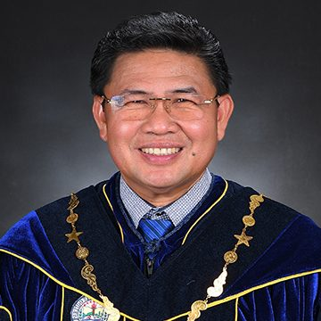
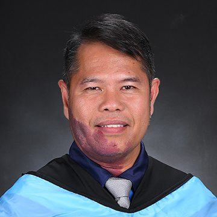
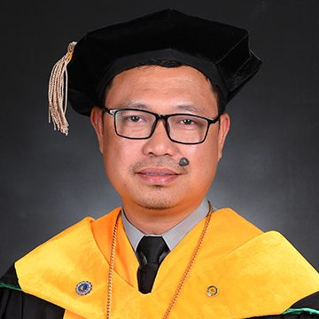
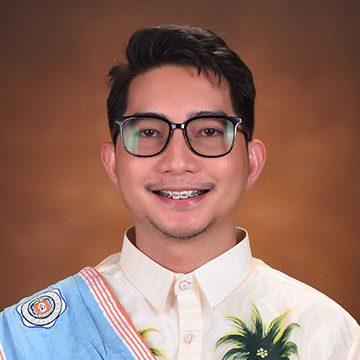
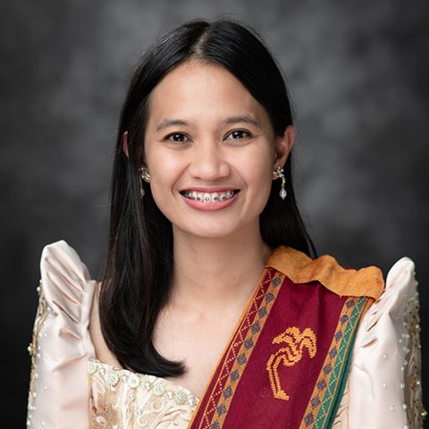
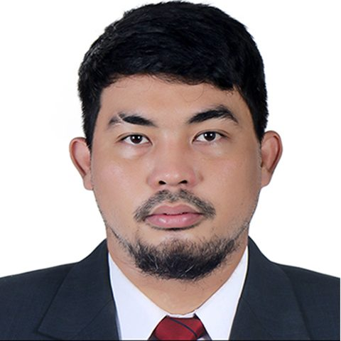

Dr. Jonel M. Corral, PhD.
Campus Leadership · Marine Science DepartmentCampus Dean / College Dean; Associate Professor II
Listed on supplied chartCampus leadership and personnel, organized by unit from the supplied Sagñay Campus organizational chart.






People appear under each role/unit shown in the supplied chart; some individuals are repeated where they hold more than one assignment.
Names and duties are shown as provided in the reference chart. People with multiple roles appear once, with assignments combined.
Campus Dean / College Dean; Associate Professor II
Listed on supplied chartAdministrative Aide VI (Clerk III)
Listed on supplied chartCollege Librarian I
Listed on supplied chartLibrary Assistant
Listed on supplied chartRegistrar Designate; Administrative Officer IV (HRMO II)
Listed on supplied chartOffice of Student Affairs and Services Coordinator; Assistant Professor I
Listed on supplied chartNurse II
Listed on supplied chartGuidance and Counselling Coordinator; Administrative Officer I (Records Officer I)
Listed on supplied chartSports and Athletics Coordinator; Instructor I
Listed on supplied chartDepartment Chair, Marine Science Department; Culture and Arts Coordinator
Listed on supplied chartInstructor I
Listed on supplied chartDepartment Chair, Fisheries Department
Listed on supplied chartUniversity Professor; Vice President for Research and Extension
Listed on supplied chartProfessor IV
Listed on supplied chartProfessor IV
Listed on supplied chartInstructor III
Listed on supplied chartInstructor III; Dormitory Manager
Listed on supplied chartInstructor III
Listed on supplied chartInstructor I
Listed on supplied chartInstructor I
Listed on supplied chartInstructor I
Listed on supplied chartAdministrative Officer V
Listed on supplied chartAdministrative Officer II (HRMO I)
Listed on supplied chartAdministrative Aide VI (Clerk III)
Listed on supplied chartAdministrative Assistant II (Disbursing)
Listed on supplied chartAdministrative Aide VI (Clerk III)
Listed on supplied chartAdministrative Aide IV (Driver II)
Listed on supplied chartAdministrative Aide VI (Clerk III)
Listed on supplied chartAdministrative Officer I (Supply Officer I)
Listed on supplied chartAdministrative Assistant II (Property Custodian)
Listed on supplied chartAccountant II
Listed on supplied chartAdministrative Officer IV (Budget Officer II)
Listed on supplied chartAdministrative Officer III (Procurement)
Listed on supplied chartAdministrative Assistant I (Buyer I)
Listed on supplied chartNot shown in the latest supplied organizational chart. Confirm current Sagñay assignment before presenting as current.
Needs confirmationNot shown in the latest supplied organizational chart. Confirm current Sagñay assignment before presenting as current.
Needs confirmationDr. Pedro V. Vargas is identified on the previous website as the first administrator; this historical note is separate from the current personnel roster.